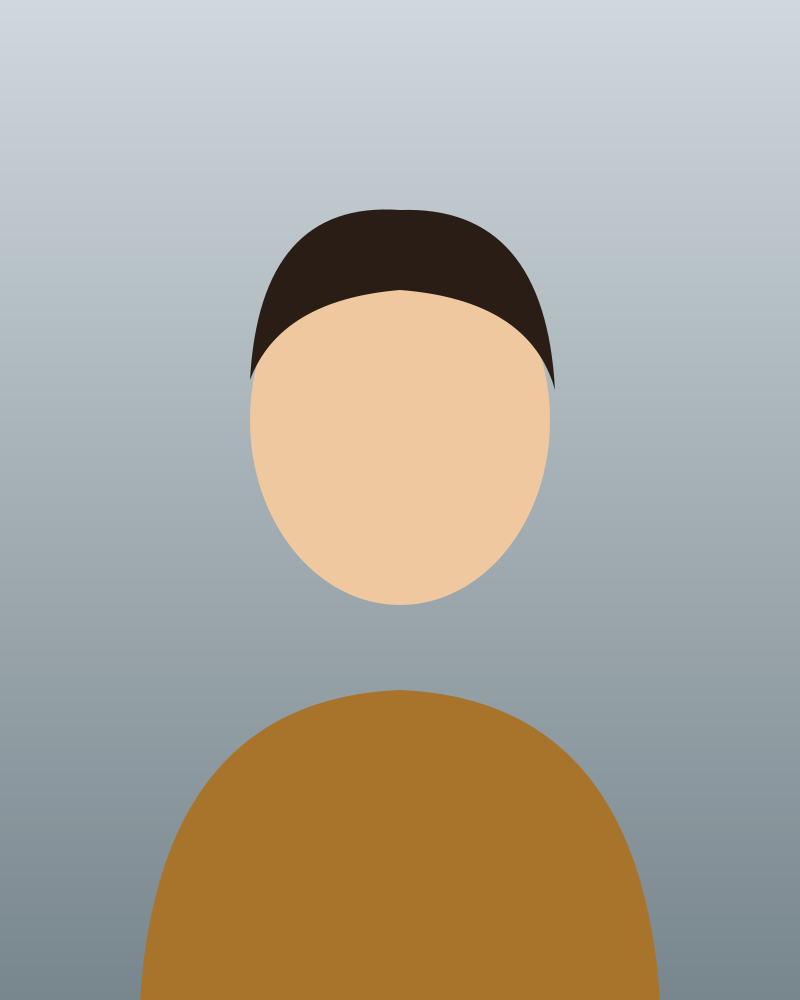
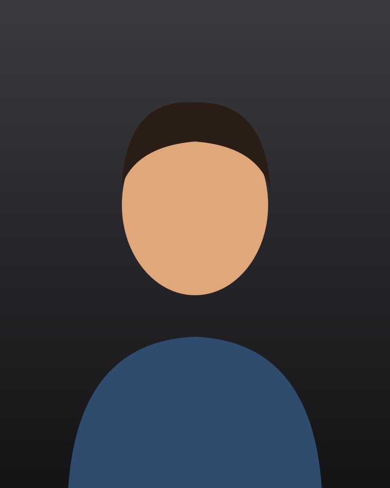

The Junction Loft
From a real shoot




Full-length fashion frame on the cyc, warm afternoon light from the left.
Focus starts on Close and stays inside the viewer. Escape or Close returns focus to the thumbnail that opened it. (L2-010.2, L2-010.4).